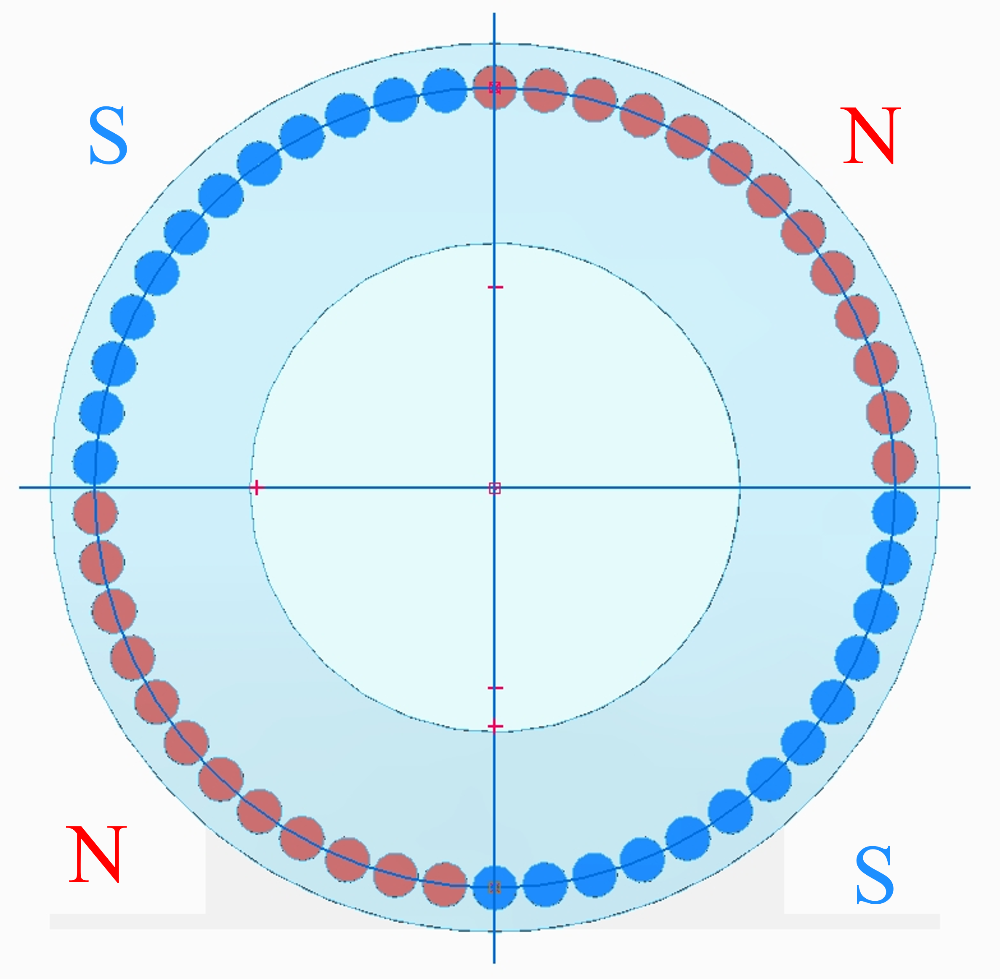
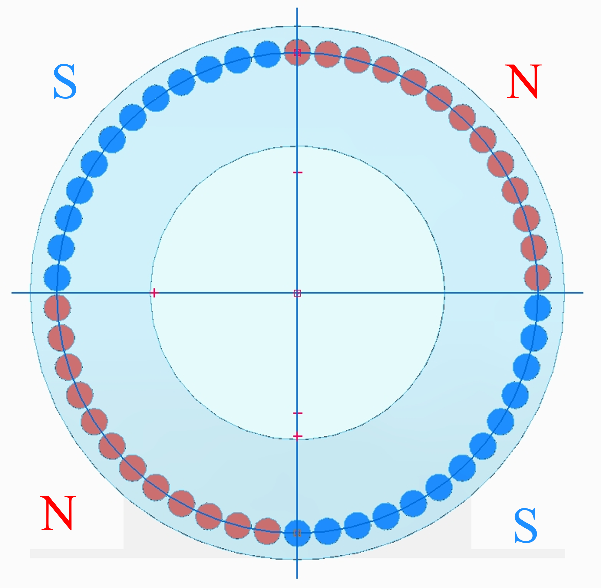
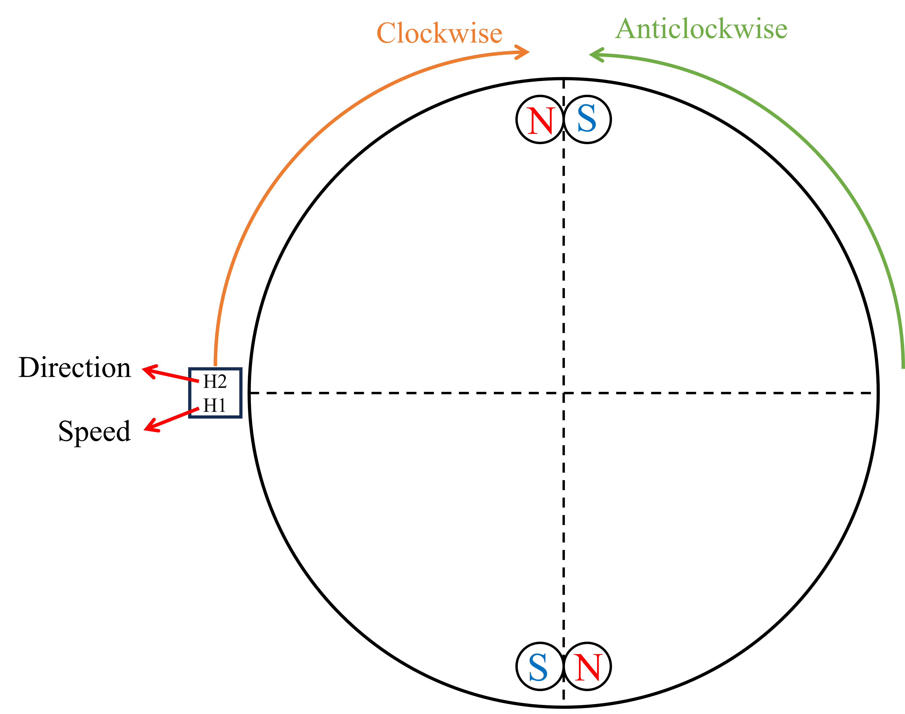
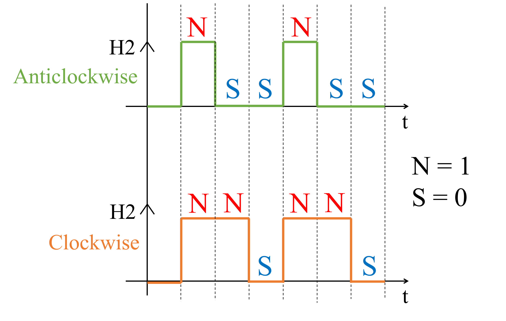

Role: Electronics Design + Firmware + Validation Testing
Drill rigs rely on correct chuck rotation and controlled feed to avoid equipment damage and protect the operator—especially during rod make-up and break-out. If the chuck rotates in the wrong direction, it can jam, cross-thread, or snap the drill rod, potentially damaging the rig and creating a safety hazard for the crew.
At the same time, operators often track drilling progress using a manual logsheet (rod count and depth). This is time-consuming and error-prone. By sensing chuck rotation speed (RPM), rotation direction (CW/CCW), and linear feed/stroke, the system enables:
- safer verification of correct make/break rotation behaviour,
- improved operational control (RPM selection for changing rock structures and directional drilling),
- automated estimation of rod count and drilling depth from measured stroke.
This makes the sensing module valuable for both safety-critical operation and productivity/automation on the rig.
The goal was to develop an intrinsically safe, field-deployable sensing system capable of reliably measuring drill rig chuck rotation direction, rotation speed (RPM), and linear feed/stroke movement in real time.
The system was intended to improve drilling safety during rod make/break operations and enable automated estimation of rod count and drilling depth, with sensor data designed for transmission over an RS485 industrial communication interface.
- Harsh drill rig conditions: the system needed to remain reliable under vibration, dust, mechanical shock, and industrial contamination.
- Wide operating speed range: chuck rotation had to be detected accurately across typical drilling speeds of 10–700 RPM, including start/stop and reversal events.
- Reliable direction detection: incorrect direction reporting during rod make/break could lead to rod damage and safety risks.
- High-resolution linear feed sensing: stroke measurement needed sufficient sampling rate and stability to enable rod counting and depth estimation.
- Intrinsic Safety compliance (IS): the sensing electronics had to operate under strict energy-limiting constraints suitable for hazardous environments.
- Robust industrial communication: telemetry had to be suitable for long cable runs and noisy environments, leading to an RS485-based architecture (Modbus-ready).
An end-to-end drill rig chuck sensing module capable of measuring rotation speed (RPM), rotation direction (CW/CCW), and linear feed/stroke travel. The system combined a Hall-effect dual-latch rotation sensor with a ToF-based stroke sensor, integrated into an intrinsically safe STM32-based electronics platform with RS485 (Modbus-ready) communication for industrial deployment.
-
Preliminary Thinking
Initially, the design approach considered using two Hall-effect switches to detect chuck rotation. If two sensors proved insufficient for reliable direction sensing, the fallback plan was to implement a four-sensor quadrature-style arrangement for robust CW/CCW detection.
For rapid prototyping, a commercial Hall-effect sensor module (XC-4434) was purchased and interfaced with an Arduino MKR Zero. Early testing confirmed that rotation speed measurement was straightforward: using a single magnet mounted on the rotating target, RPM could be computed accurately by measuring the pulse period. The setup was later validated on a lathe machine, successfully detecting chuck speeds across a wide range of approximately 35 RPM to 2000 RPM. However, determining rotation direction proved more challenging. A configuration using two sensor modules and one magnet was tested, but it did not produce a consistent or repeatable phase relationship. As a result, there was no reliable signature to detect reversal, making direction classification unstable.
To address this, a dedicated low-voltage dual Hall-effect latch sensor was selected, capable of supporting both speed and direction detection. The device integrates an internal voltage regulator, two Hall sensing elements with offset cancellation, and dual open-drain output drivers in a single package—providing a compact and robust solution suitable for industrial field deployment. -
Challenges in direction detection using a Hall-effect dual latch sensor
Rotation speed measurement using the dual Hall-effect dual latch sensor was relatively straightforward and similar to the earlier XC-4434 module. RPM could be calculated reliably by measuring the pulse period generated on the open-drain SP (speed) output.
However, rotation direction detection was significantly more complex, as outlined in the sensor datasheet. The device determines direction based on a specific magnetic field sequence generated by a magnetic encoder disk with alternating North–South poles. This alternating pole arrangement produces a defined switching pattern that allows the sensor to drive the open-drain DIR output high or low depending on rotation direction.
In the drill rig application, the chuck rotation assembly used a large-diameter disk (Figure 1) designed to house discrete magnets. Replicating the datasheet-recommended alternating N–S magnetic ring on this disk would require approximately 50 magnets to form a full alternating pole pattern (Figure 2).
 Figure 1: Chuck rotation magnet housing disk used for experiments.This approach was not considered viable due to:Figure 2: Datasheet-style alternating N–S pole arrangement required for DIR output sequencing.
Figure 1: Chuck rotation magnet housing disk used for experiments.This approach was not considered viable due to:Figure 2: Datasheet-style alternating N–S pole arrangement required for DIR output sequencing.- high component count and assembly complexity,
- increased mechanical integration effort,
- poor cost-effectiveness for field deployment.
As a result, an alternative solution was required. The key insight was that if the magnet offset and air-gap distance could be optimized, the sensor could be driven into producing a consistent switching sequence—allowing reliable direction detection without requiring a full alternating-pole magnetic ring. -
Alternate solution for direction detection
To overcome the limitations of requiring a full alternating N–S magnetic ring, an alternative magnet arrangement was developed on the chuck magnet housing disk, as shown in Figure 3. The goal was to generate a repeatable switching sequence that changes predictably when the chuck rotation reverses direction.
Through multiple trial-and-error experiments on the lathe machine, a critical sensor placement window was identified. A sensor-to-magnet offset of approximately 22–24 mm (Y) and 1–3 mm (X) (Figure 4) consistently produced the required switching behaviour on the DIR output.Figure 3: Proposed alternate magnet arrangement on the chuck magnet housing disk. Figure 4: Sensor placement window (X and Y offset) identified through lathe testing.
Figure 4: Sensor placement window (X and Y offset) identified through lathe testing.
Using this optimized geometry, distinct pulse patterns were observed for clockwise and anticlockwise rotation. The measured sequences are summarized in Table 1 and illustrated in Figure 5.Table 1: Specific sequence for direction detectionDirection Step H1 Output State H2 Output State Anticlockwise St(t) N 1 N 1 St(t+1) N 1 S 0 St(t+2) S 0 S 0 St(t+3) N 1 N 1 St(t+4) N 1 S 0 St(t+5) S 0 S 0 Clockwise St(t) S 0 S 0 St(t+1) N 1 N 1 St(t+2) N 1 N 1 St(t+3) S 0 S 0 St(t+4) N 1 N 1 St(t+5) N 1 N 1 A key outcome of this approach was that the pulse duty cycle became direction-dependent. Specifically, the pulse duty cycle during anticlockwise rotation was significantly smaller than during clockwise rotation, creating a clear and repeatable signature for direction classification. This duty-cycle difference provided a robust method to determine:Figure 5: DIR pulse sequence showing duty-cycle difference for clockwise vs anticlockwise rotation.- Direction (CW vs CCW) from duty-cycle thresholding
- Speed (RPM) from pulse period measurement
-
Firmware challenges and solutions
-
Challenge: RPM must be accurate across a wide speed range (very slow to very fast).
At low RPM, pulses are widely spaced, which reduces update rate and makes the speed estimate appear sluggish. At high RPM, pulse periods become very short, increasing susceptibility to timing jitter and interrupt overhead.
Solution: Implemented an interrupt-driven pulse period measurement approach using edge-to-edge timing. To improve stability, an adaptive averaging strategy was applied, where multiple pulse periods are averaged at higher speeds (for noise reduction), while fewer pulses are averaged at lower speeds (for responsiveness). A zero-speed timeout mechanism was also implemented to ensure the RPM output reliably drops to zero during stall or disengagement events. -
Challenge: Noise / false edges in a harsh industrial environment.
Electrical noise, long cable runs, mechanical vibration, and EMI from drill rig equipment can introduce false transitions, leading to incorrect RPM or unstable direction state detection.
Solution: Added edge qualification logic to reject unrealistically short pulse periods, combined with temporal filtering (moving average). Direction classification was implemented as a state-based decision process, requiring a consistent direction signature over multiple cycles before switching state, preventing flickering due to noise. -
Challenge: Direction detection must be reliable during start/stop and reversals.
During reversals and transient operation, pulse timing characteristics can become irregular, making direction classification unreliable if based on a single pulse or edge.
Solution: Direction was determined using a robust duty-cycle signature derived from multiple pulse cycles rather than instantaneous edge timing. Hysteresis and debouncing were applied by enforcing duty-cycle threshold margins and confirming direction changes over several consecutive cycles before updating the reported direction state. -
Challenge: “No pulse” and stall detection must not lag too much.
If the stall detection threshold is too long, the system continues reporting the last valid RPM after rotation stops. If it is too short, very low RPM operation may be incorrectly classified as zero.
Solution: Implemented a configurable timeout window tied to the minimum expected rotational speed, along with debounced zero detection to prevent oscillation between low-RPM readings and zero near the threshold.
-
Challenge: RPM must be accurate across a wide speed range (very slow to very fast).